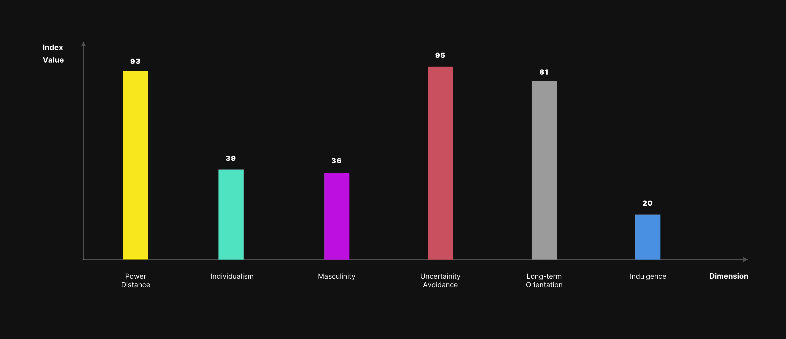

Domain
Culture-centered design, User Research
Type
Graduate Coursework [Individual]
Timeline
Sep, 2018 - Dec, 2018 [3 Months]
1. Background
Design is never done – users want it to be more personal and accessible, at the same time being more functional as well. Amazon is one of the biggest companies in the world right who has its hand in every domain. But for now, the company assumes an indistinguishable design layout for all its global audience which can only serve them for so long with the growing usage of their website. This study is about how a culture-centered approach towards website design could produce experiences that are more accessible and usable for people in Russia.
1.1 Hofstede's Dimensions
From the outside, it seems tempting to translate the website into a local language for the sake of localization for a target market. But localization is more than that; it must reflect specific cultural preferences in content, navigation, layout, and color, making sure everything makes sense in a linguistic and cultural context when designing a website. Put simply, website localization is creating a just as compelling experience for a target market as your home-based clientele. Hofstede’s Cultural Dimensions neatly summarize the effect of a society’s culture on the behaviour of its members and provide us insight into what the above mentioned cultural preferences and context could denote.
1.2 Mapping dimensions to design requirements
Design is all about how one views artifacts, and the cultural dimensions shape exactly that. Each of these dimensions correspond to a design requirement, which is summarized in the diagram below:
2. Current Scenario
It is no secret that Russia is one of the most attractive target markets for foreign players such as Amazon, eBay, and AliExpress etc. right now. However, the dark horse leading the race of e-commerce in Russia is ‘Ulmart’ – despite the recession and shrinking consumer spending, Ulmart’s growth continued between 2015 and 2016 and one thing has served them well. Seeing Amazon flunk in the Russian market, Ulmart did things differently; their user research governed that most of the people in Russia live in apartments rather than houses; therefore, door-to-door delivery of goods might not be efficient. As a result, they employed a hybrid model between traditional brick-and-mortar stores and e-commerce stores where people pick up their goods, choosing from over 450 pick up points currently. The statement from the CEO of Ulmart-
"[Our model] is the next generation of internet retailing; we can even argue that we are faster and more reliable than Amazon. We bet that in a couple of years, Amazon will switch to our model”;
signifies the extensive research done by Ulmart to patronize the world’s biggest e-commerce website. It becomes evident that studying user buying habits, their context of use, and their constraints should all be taken into account no matter how successful a product might be. However, even if Amazon were to use the same business model as that of Ulmart, their mode of access, i.e. their website, would still be a mere facsimile of their local American website, except in Russian. Therefore, it is essential to enumerate the things that are out of cultural context in amazon.com:
2.1 Content and Navigation
For a society with high power distance, providing them with the right information in a structured format without hampering their ability to navigate becomes a must when designing a website. In Fig. 2 below, the homepage of amazon.com does not conform with the above-mentioned guideline and describes the possible pain points that might conjure up in a Russian market usage:

2.2 Ambiguity
In a country with a high uncertainty avoidance index, an e-commerce website should almost always avoid experimenting with the user base, and that goes for both design and business choices. For instance, the current Amazon homepage has an ‘Unexpected gift ideas’, which increases user ambiguity about what that idea could be. In addition, the ‘Like-new’ category does nothing to ensure the user that they would be buying something significantly cheaper as compared to a ‘brand-new’ product. Even on the homepage, the banners give no information about when the deals begin or last till, obscuring the user decision-making. Figure 3 below elucidates on this design choice:

2.3 Explicitness
For a highly self-restraint society, prices are everything. Therefore, it is important to be explicit about product costs, discounts, and time periods for the same. For instance, the home page does a good job to grab the users attention, however, they are equivocal about the ‘Top Products’; are they top rated because of their price or reviews? What is the last day to avail these offers? What is their starting price range? All these make sense in the context of the user whose buying habits are entirely dependent on the price of the product. Figure 4 explains what’s wrong:

2.4 'Contact Us', if you can
‘Dark Patterns’ are carefully crafted user interface elements that are meant to misdirect and confuse, and amazon.com is replete with these elements. It makes it almost impossible for the people to seek help with anything. For instance, deleting your account is seemingly impossible for anyone without any prior knowledge of doing so. It requires you to go all the way to the end of the page, then selecting ‘Contact Us’, then selecting ‘Need Additional Help’, and finally selecting ‘Login and Security’ which leads you to ‘Delete your account’. This inane process of deleting your account would make no sense if there had been an option just in ‘Your Account’ section. As a predominantly feminine society, Russian users are more likely to contact the website for assistance, and as a result, this may not help their cause.
2.5 Summary
Despite the pain-points discussed earlier, there are some dimensions that the site addresses well as shown in Fig. 5. For instance, the users have the option to view the most prevalent deals, view customer reviews for each product, and share those products on all the popular social media platforms, which is crucial for a collectivist society as they tend to make decisions as a group. Nevertheless, a redesign is imperative. Therefore, below is a list of design requirements based on the pain points discussed earlier:
- Persistent navigation bar across all views for better overall navigation around the interface.
- Straightforward information about the prices, deals, and discounts.
- Segregated sections for managing orders, accounts, and wish lists.
- Avoid usage of experimental design features.
- Allow the user to contact the website for help or feedback at all times.
- Use of a collectivist language with the ability to share everything across all popular social media platforms.
3. Solution
3.1 Final Designs
It is evident that the current Amazon website is not fit for introducing in the Russian market. The study here proposes some changes that could work for the better half of achieving that goal. Fig 6. Below is a mock-up of a possible amazon.com redesign (in Russian as well as the English language for easier comprehension). The mockup by no means is a perfect example of how the amazon.ru should look, however, it is a step in the right direction by giving cultural considerations the topmost priority.


3.2 Reflection
I feel website design is much more than coding and making design choices based on aesthetics. One golden rule of thumb every web designer should remember when crafting their sites is that the second a website becomes live, it is global. Therefore, this case-study helped me reflect back at the times my redesign solutions were just based on making the website prettier. To sum up localization as a design solution, here are a list of factors that I keep in mind:
- Content: The content of the website should avoid anything that might offend the target audience, even innuendos that are sometimes meant to convey something in a funny way.
- Color Considerations: Some colors might be frowned upon, some might be considered holy. Avoid colors from national flags, symbols.
- Graphic Considerations: Avoiding iconography that might contain gestures, actions, or symbols considered repulsive or rude in a culture.
- Overall Design and Layout: Incorporating cultural dimensions to get insight into the overall information architecture of the website.
- Mode of Access: Not everyone has the same device hardware, operating system and frequency of usage.